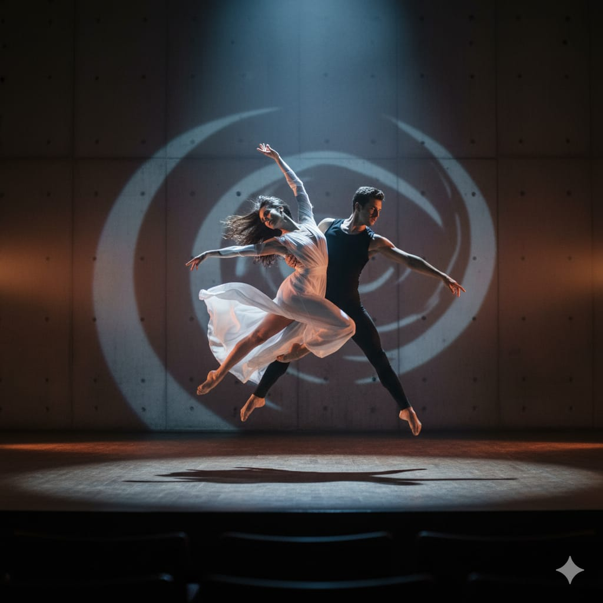

Teatro
El teatro es una de las formas de expresión artística más antiguas de la humanidad. A través de la representación escénica, los actores dan vida a historias que nos hacen reflexionar, reír, llorar y conectar con diferentes aspectos de la experiencia humana. El teatro no solo entretiene, sino que también educa y promueve el pensamiento crítico sobre temas sociales, políticos y filosóficos.
Géneros Teatrales
- Tragedia
- Comedia
- Drama
- Teatro musical
- Teatro experimental
Descubre más sobre esta fascinante forma de arte en Wikipedia - Teatro.
Danza
La danza es el arte de expresarse mediante movimientos corporales rítmicos, generalmente acompañados de música. Es una manifestación cultural presente en todas las sociedades del mundo, cada una con sus propias tradiciones y estilos. La danza combina disciplina física, expresión artística y creatividad, siendo una forma completa de arte que beneficia tanto el cuerpo como el espíritu.
Estilos de Danza Populares
- Ballet clásico
- Danza contemporánea
- Danza folklórica
- Hip hop
- Salsa y bailes latinos
- Jazz